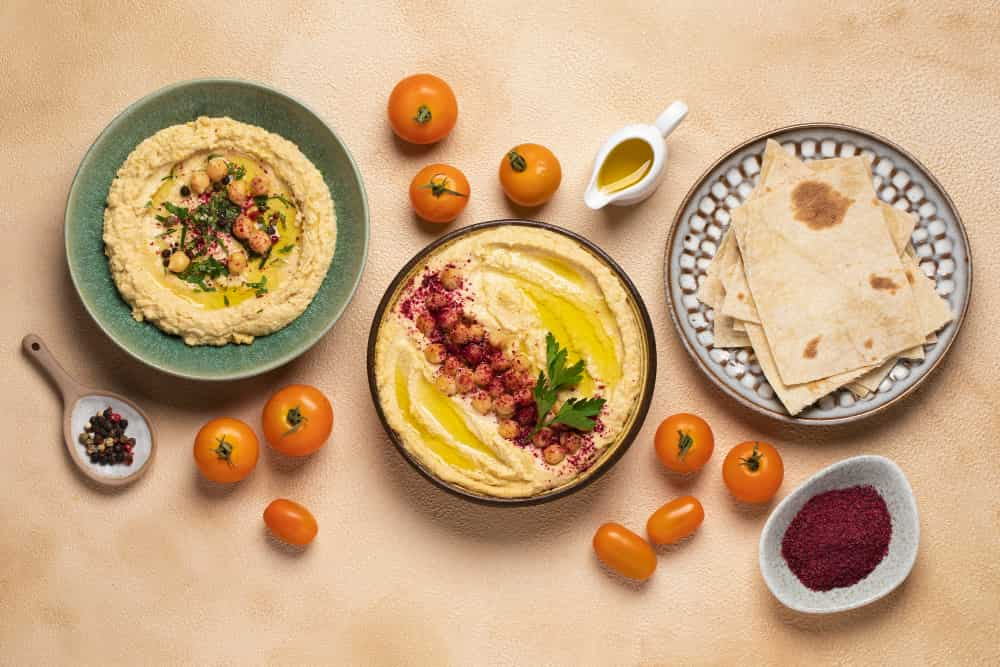

The Best Hummus
The best hummus is lusciously creamy, yet somehow light and fluffy. It’s beautifully smooth and swirled, and begging to be scooped up onto a wedge of pita bread. It’s nutty and tangy, thanks to the tahini, with notes of bright, fresh lemon and mellow garlic.
Ingredients For Hummus
1) Mushy chickpeas
Cook canned or leftover cooked chickpeas according to step 1 below. This only adds 20 minutes to your hummus-making time, and it’s my number one tip for making perfect hummus at home.
Want to cook your chickpeas from scratch?
You sure can—see the recipe notes.
Can you over-cook your chickpeas in an Instant Pot?
I don’t recommend it—you’ll end up with a mess of chickpea mash clogging your vent and a puddle of chickpea cooking water surrounding your Instant Pot. I speak from experience.
2) Great tahini
All tahini is not created equally. When I was in Israel, Israelis’s spoke of tahini, or “t’hina,” with reverence. I learned that the best tahini comes from Ethiopia. Store-bought tahini in the U.S. varies widely in flavor, with some of them so bad that they’ve ruined my hummus.
Don’t skimp on the tahini, either
You need to use 1/2 cup tahini per can of chickpeas for rich and irresistible hummus. I once toured an enormous hummus production facility and learned that they often reduce the cost of producing store-bought hummus by using less tahini. Sneaky!

3) Ice-cold water
Why do you always want to mix ice-cold water with tahini? This is another trick that I learned on my trip. I can’t find a scientific explanation, but it seems to help make the hummus light and fluffy, and lightens the color of the tahini to a pale ivory color.
4) Fresh-squeezed lemon juice
Store-bought lemon juice always tastes stale and sad, and it will make your hummus taste stale and sad. Buy lemons and your humus will taste fresh and delicious. I almost always add another tablespoon of lemon juice to my hummus for extra flavor before I plate it, but I’ll leave the tang factor up to you.
5) Garlic, mellowed in lemon juice
This is another trick from Solomonov—if you mince the garlic in the food processor or blender with the lemon juice and let that mixture rest for a few minutes, the garlic will lose its harsh, raw bite and mellow out.

6) Olive oil, blended into the hummus and drizzled on top
Solomonov doesn’t blend any olive oil into his hummus, but I think that one tablespoon makes the hummus taste even more luxurious and creamy. I recommend it!
7) Ground cumin
The cumin is subtle and offers some “Je ne sais quoi,” if you will. It’s a common ingredient in plain hummus recipes, and makes the hummus taste a little more special.